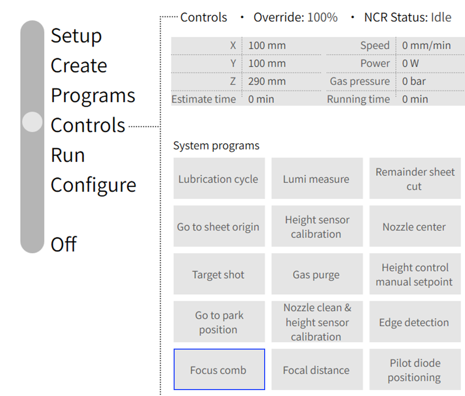
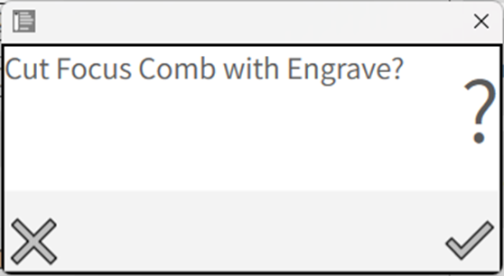

Fokuskamm
Um die Fokuslage exakt zur Tafeloberfläche hin zu kalibrieren, wird der Fokuskamm verwendet. Der Fokuskamm ist ein Programm, das die Fokushöhe variiert und den durch die Toleranz der optischen Komponenten verursachten Versatz anpasst. Durch das Aktivieren dieses Programms kann der Bediener die Variation der Fokuslage überprüfen, indem er die erforderliche Technologietabelle entsprechend der Verwendung der Tafel mit dem erfassten Arbeitsversatz auswählt. Minimaler und maximaler Fokus, laufende Nummer, Fokusdurchmesser und Verschiebewert können je nach Bedieneranforderung definiert werden.

-
Der minimale und maximale Fokus beträgt bei einem Durchmesser von 150 µm und 210 µm -3 bzw. +3.
-
Der Wert Fokusverschiebung1 dient zum Bestimmen der Fokuslage. Der Bediener kann den Wert dem Fortschritt entsprechend anpassen, indem er ihn in der Fühlerlehre überprüft.
-
Bestimmen Sie den kleinsten Schnittspalt „K“ (= Fokuslage) im Fokuskamm.
-
Überprüfen Sie mit der geeigneten Fühlerlehre (z. B. 0,25 mm) jeden einzelnen Schnittspalt, ausgehend von links bzw. von rechts.
-
Markieren Sie sowohl auf der linken als auch auf der rechten Seite den Schnittspalt, bei dem die Fühlerlehre klemmt.

-
Berechnen Sie die Fokusverschiebung und geben Sie sie unter Fokusverschiebung1 ein.
-
Alte Fokusverschiebung A in mm, kleinster Schnittspalt K in mm.
Fokusverschiebung = A + K.
-
Der Bediener kann während der Programmlaufzeit auch den Fokusdurchmesser überwachen.
-
Unten erscheint eine Bestätigungsmeldung, um den Prozess zum Schneiden des Fokuskamms zu starten, zusammen mit den zu gravierenden Dateneingaben.

 Figure 1. Beispielausgabe
Figure 1. BeispielausgabeWeitere Einzelheiten finden Sie in der Bedienungsanleitung der Maschine.